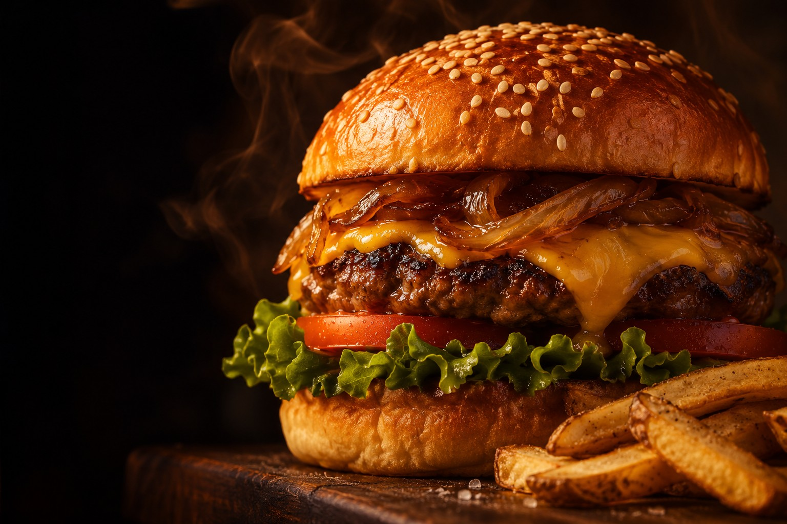
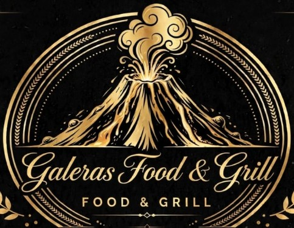

GALERAS FOOD & GRILL
Sabor
volcánico.
Hamburguesas, salchipapas y desayunos con el sabor de Nariño. Encuentra tu próximo antojo.

NOSOTROS
Galeras Food & Grill.
En nuestra carta, los volcanes de Nariño dan nombre a los desayunos. El Volcán Cumbal reúne calentado de frijol, huevo, papa y café. El Azufral lleva mote, chicharrón y ají de maní.
También encontrarás hamburguesas en pan artesanal, salchipapas y canoas de plátano maduro. Para acompañar, prueba los hervidos de mora, maracuyá y lulo.